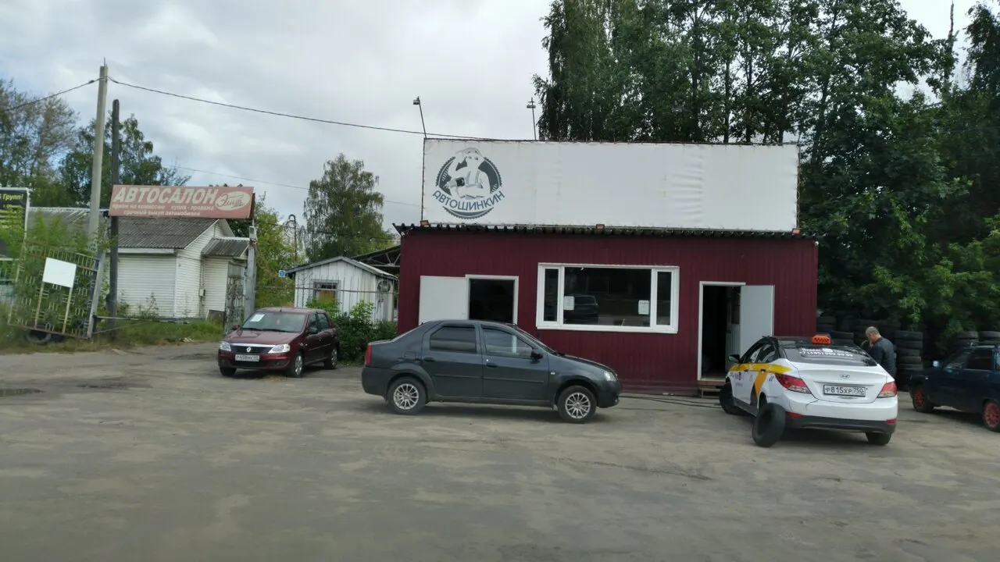
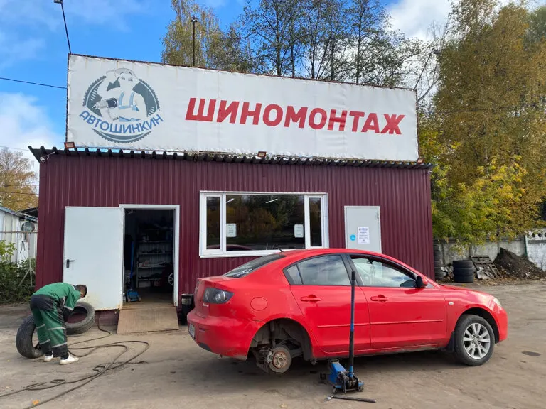
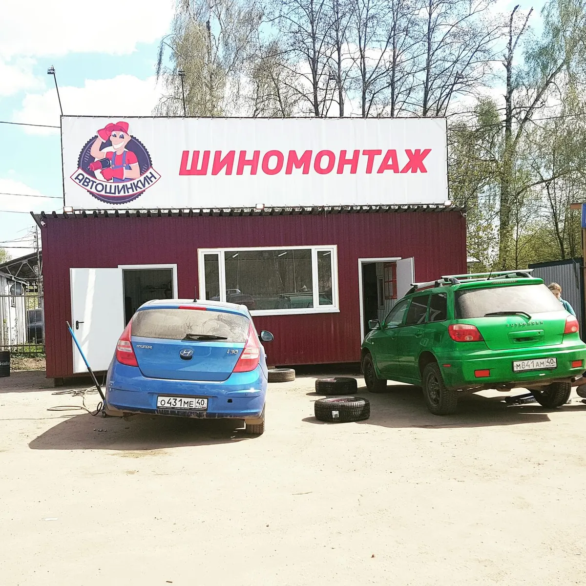
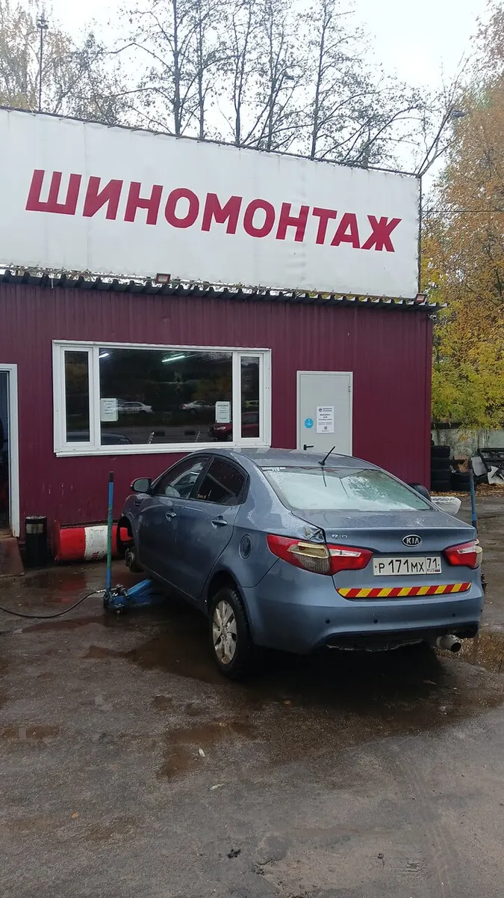

Шиномонтаж · Обнинск
Шиномонтаж в Обнинске по записи – быстро и без очереди
Низкий профиль и RunFlat берём, шины храним до сезона. Прайс открытый – сумму знаете до начала работ.
- Хранение шин до следующего сезона
- Низкий профиль и RunFlat – берёмся
- Запись в удобное время

Что входит в переобувку
Входит
- Снять и поставить четыре колеса
- Перебортировка
- Балансировка каждого колеса
- Затяжка динамометрическим ключом
- Проверка давления
Отдельно, если нужно
- Низкий профиль и RunFlat – надбавка 50%
- Замена вентилей и датчиков
- Сезонное хранение
Цена известна до приезда
Считаем по радиусу и профилю: чем больше колесо, тем дольше монтаж и балансировка.
Сезонная переобувка комплекта
- R13–R15от 1 800 ₽
- R16от 2 000 ₽
- R17–R18от 2 600 ₽
- R19–R20от 3 300 ₽
- R21–R22от 4 000 ₽
Остальное
- Низкий профиль и RunFlatнадбавка к цене переобувки+50%
- Ремонт проколажгут или заплатка изнутриот 500 ₽
- Ремонт бокового порезаот 1 200 ₽
- Замена вентилейот 400 ₽
- Сезонное хранениекомплект маркируем и хранимуточнить
- Правка и прокатка дисковуточнить
- Мойка колёсуточнить
В цену переобувки входит: снять четыре колеса, перебортировать, отбалансировать, поставить. Грузики и момент затяжки – по регламенту.
Цены для примера. В вашем сайте будут ваши.
Как проходит
- 01
Звоните или пишите и выбираете время
Запись в удобное для вас время.
- 02
Приехали – машина сразу в бокс
По записи без очереди.
- 03
Каждое колесо – через стенд балансировки
Балансировка уже в цене.
- 04
Отдаём машину и чек
Сумма та, что назвали до начала.



Что обещаем
Сумму называем до начала работ
Прайс открытый – не дописываем в чек лишнего.
Берёмся за сложное
Низкий профиль, RunFlat, боковые порезы, правка дисков.
Храним шины до следующего сезона
Комплект маркируем – весной приехали и поехали.
Скидки постоянным клиентам
У нас переобуваются по три года подряд – мы это ценим.
Отзывы с Яндекс.Карт
«Пользуюсь их услугами уже 3 года (переобувка и хранение). Ни одного промаха. Запись в удобное для меня время, быстро, качественно и по приемлемой цене.»
Зиля Мирончева · 22 апреля 2025
«Уже два раза у них переобувался. И один раз прокол ремонтировал. Так же замену вентилей делал в этот раз. Все четко, спасибо! Советую.»
Денис Б. · 28 октября 2025
«Хорошая шиномонтажка. Приемлимые цены. Хорошие ребята, адекватные, общительные!»
Александр Бабенко · 5 ноября
Отзывы с карточки на Яндекс.Картах, без правок.
Частые вопросы
Сколько длится переобувка?
Около получаса на комплект, если вы записались заранее.
Берётесь за низкий профиль и RunFlat?
Да. Это надбавка 50% к цене переобувки – вы знаете её до приезда, а не из чека.
Можно оставить шины на хранение?
Да, храним комплекты до следующего сезона. Стоимость сезона уточняйте по телефону.
Ремонтируете боковые порезы?
Да, делаем жгутом или заплаткой изнутри. Если ремонт невозможен – скажем прямо.
Запишитесь к своему времени
- Адрес
- Обнинск, Лесная ул., 1А, Обнинске
- Часы
- Каждый день 08:00–20:00
- Телефон
- +7 (910) 521-67-37